1º - Colocando hiperlinks.
2° - Colocando imagens
3º - Definindo as cores dos textos de forma geral e específica.
W3schools, HTML elements (link com endereço absoluto).
index.html (link com endereço local).
"Em src", coloca-se o nome da imagem. Em "alt", coloca-se o texto alternativo que aparece em caso do arquivo de imagem não ser encontrado. Em "width", define-se a largura e em "height" define-se a altura. Em "title", insere-se um texto que aparecerá quando o cursor estiver em cima da imagem, texto, etc.
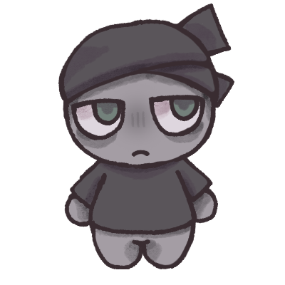 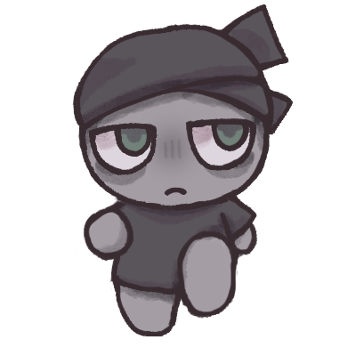
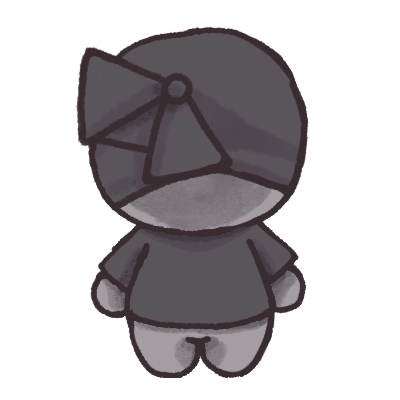
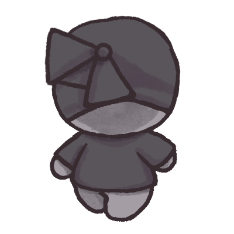
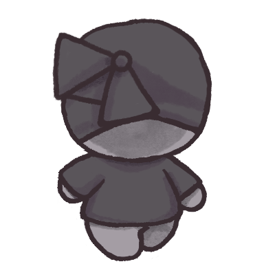
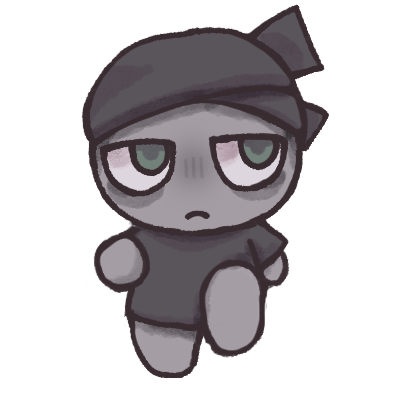
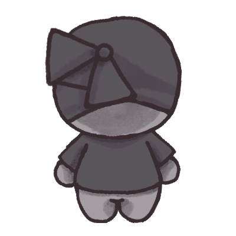
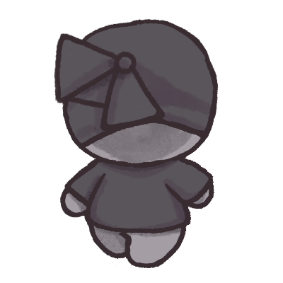
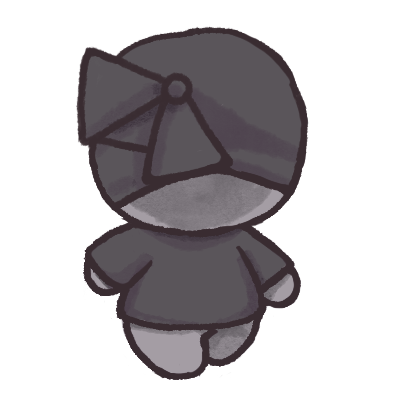
Cria-se uma tag chamada "style" e dentro dela insere-se "tipodotexto{color: cor}".
Dentro da tag do texto (exemplo: p, h1, h2, etc), insere-se "id=nomeidentificadordotexto" (exemplo: id=primeiro). Depois cria-se uma tag chamada "style" e dentro dela insere-se "tipodotexto#nomeidentificador{color: cor}".
1º - O "./" é usado para selecionar uma pasta/arquivo dentro do computador.
2º - Quando insere-se uma segunda imagem e há espaço ao lado da primeira, esta ficará ao lado. Para colocá-la embaixo, é necessário um "br".
3º - Para comentar, insere-se "/*" e fecha-se com "*/"
4ª - "font-weight: bold;" é utilizado para tornar um texto negrito.
5º - O comando "Lorem" é utilizado para gerar um texto aleatório.
 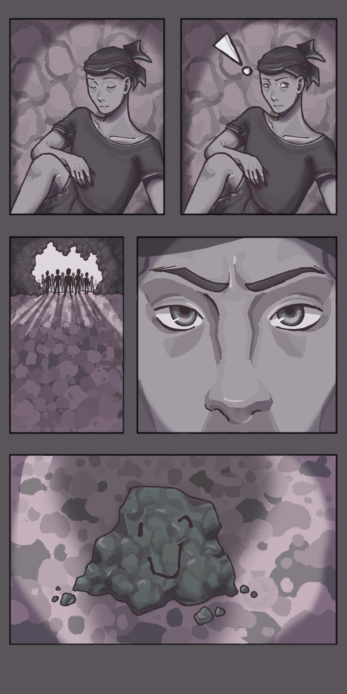
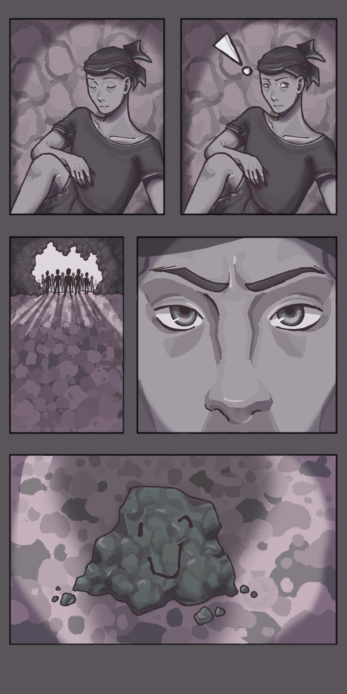